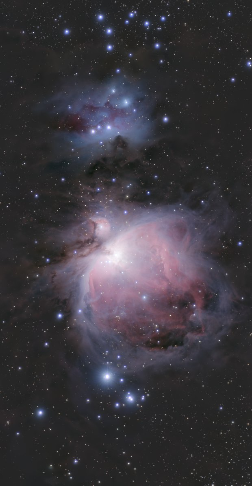

Stretched image
Saturation tool
Richer colours, without shifting the hue; overall or one hue at a time.
How to use it
- Open Tools and click the tool: it is added after the selected step.
- Move its settings: the image follows as you move them (Live preview).
- Press Apply to keep the result. Before / after compares at any time.
One colour at a time: right-click a colour on the image, keep the button down and drag right or left. That hue and its neighbours get more or less saturated.
Settings
- Amount
- Positive: richer colours. Negative: towards grey.
- Protect the dark sky
- Keeps the background noise from turning into coloured blotches.
- Hue strip
- The hues set apart: a point above the line is more saturated, below it less.
- Mask
- Everywhere, Bright parts (the object, not the sky) or Dark parts. Stars are not in the mask.
- Threshold
- Where the mask starts, from the sky background (0 %) to the brightest part of the object (100 %).
When to use it
After the stretch, once the contrast is set. Works on the nebula, or on the stars layer alone.
Image
Works only on a stretched image.
Example

 withoutwith Saturation
withoutwith Saturation